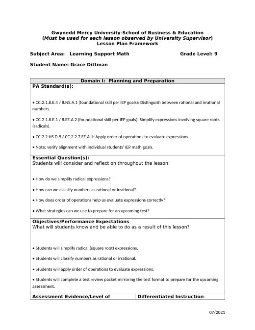
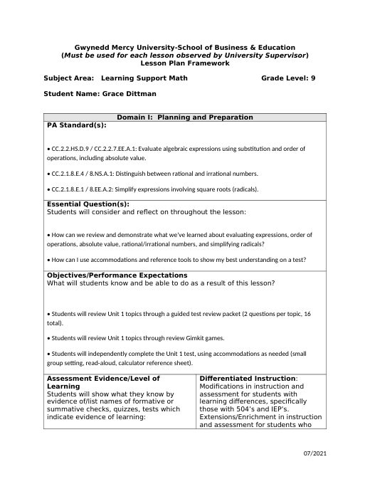
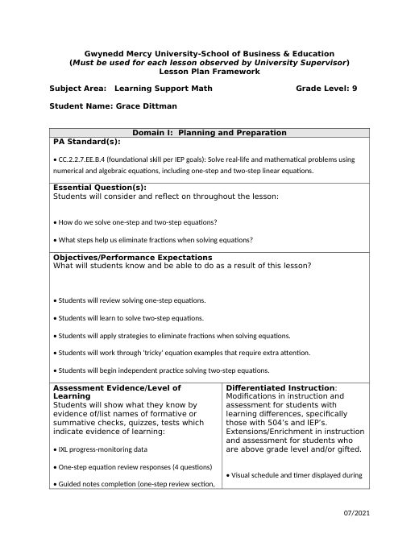
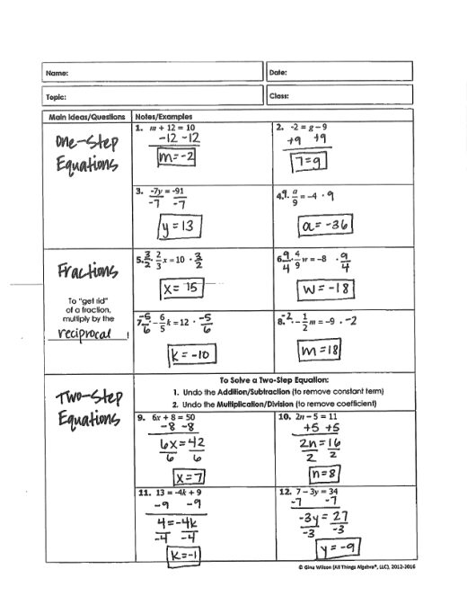
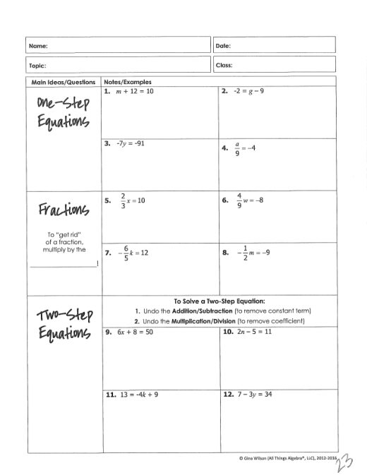
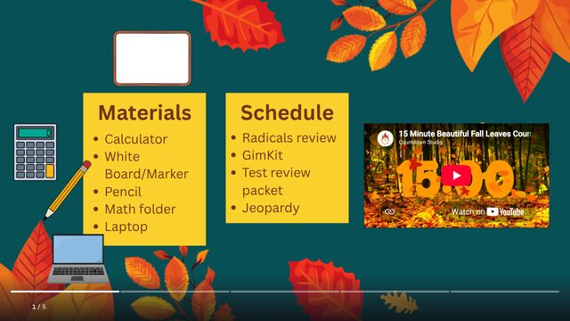

Grace Dittman
Block 2 Math
Block 3 Math
ESS
Lesson Plans
Résumé
Photos
Search
Home
›
Block 3 Math
›
Week 5
Week 5
← Week 4
Week 6 →
Activities
· 3 files
One-Step Equations Warm-Up
1 Step Warm-Up.docx
One- & Two-Step Equations Homework
2StepPractice.pdf
One- & Two-Step Equations Homework Key
2StepPracticeKey.pdf
Lesson Plans
· 3 files

B3_9-25_28LessonPlan
B3_9-25_28LessonPlan.docx

B3_9-29_30LessonPlan
B3_9-29_30LessonPlan.docx

B3_10-1_2LessonPlan
B3_10-1_2LessonPlan.docx
Notes
· 4 files

Two-Step Equations Notes Key
2StepNoteKey.pdf
Two-Step Equations Notes & Practice
2StepNotes&Practice.pdf

Two-Step Equations Notes
2StepNotes.pdf
Parts of an Expression Notes
coefficient notes.docx
Slides
· 1 file

B3 Week 5 Slides
B3 Week 5 Slides.docx
← Week 4
Week 6 →